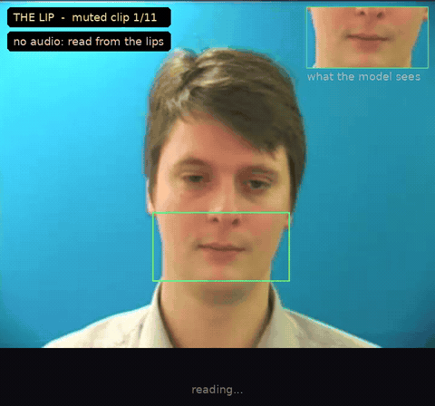

syrup
A Rust computer-vision library where you name the function you need and the library builds it.
thelip.syrup → read your lips, live, in the browserThe Lip reads lips from muted video. This page runs it on your phone: point the camera at your mouth and say a sentence from its vocabulary.
